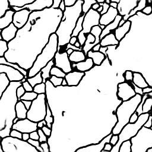
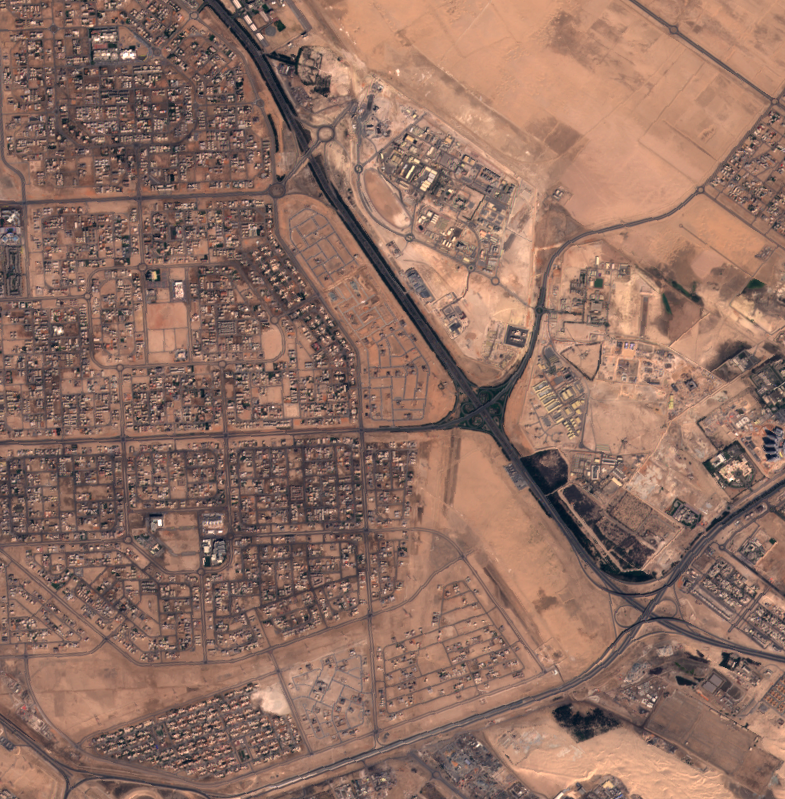
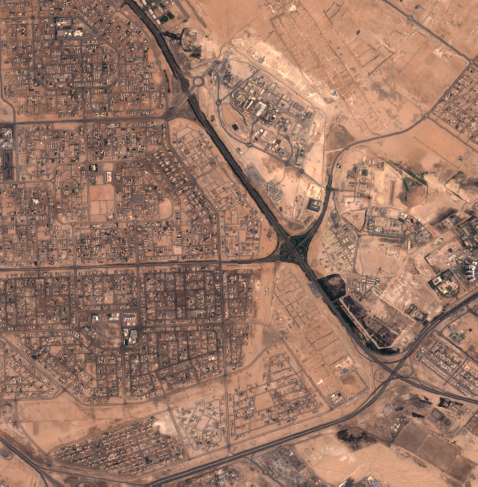
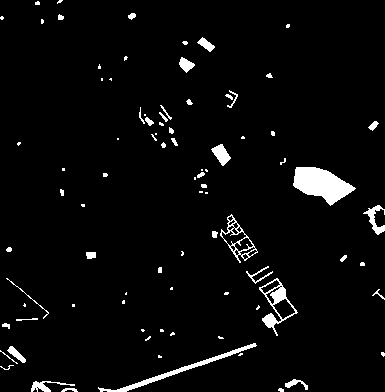
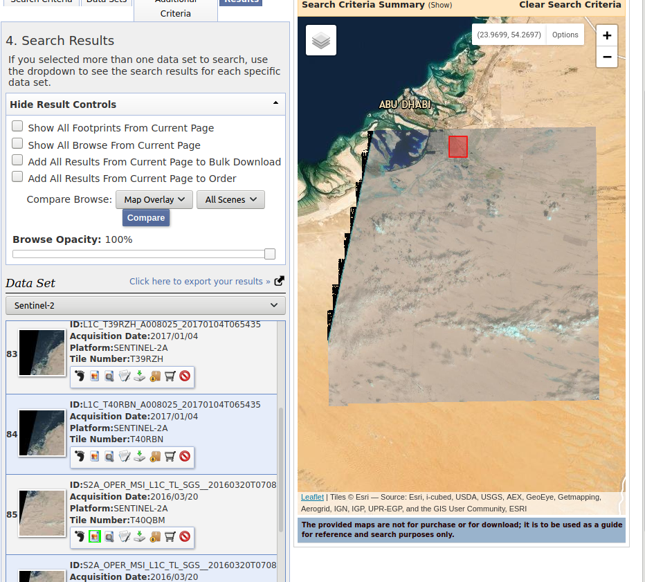

Change Detection Using Machine Learning
-- mode: org --
Useful Links
ML Methods to become familiar with
TODO LSTM blocks
April 21, 2020
Initial Questions
• What is QI data and how can it help us?
• How will having mulitspectral images assist in change detection?
• Am I stupid for not knowing where the x8 comes from in 10980x10980x8 that defines a certian .jp2 file?
Done today
• Created GitHub
• Created progress/prep document
• Finished intern orientation and necessary documents.
• Created an account with USGS and downloaded some data
• Read through some examples of U-nets in colab
Understanding The Data
Sentinal-2 data
• 650MB file size.
• One file for each of the 13 spectral bands plus metadata .jp2 filetype
• 10980x10980x8
• Use QI data to Georeference the data?
• Maybe the GeoTIFF file could help.
TODO
• Add Brain and Ryan as contributers
• Hopefully start using confluence and get VDI set up.
• More research into what has been done regarding U-nets with complex images
• More research into Change Detection Dataset
• Get more of an idea as to what has already been done regarding this project
April 22, 2020
Questions
• CUDA issues
Discussion
• Found GitHub code that detects urban changes in sentinel-2 data (pytorch) (Uses GPU through CUDA platform)
April 23, 2020
Unet by zhixuhao
• Fully Implemetned into colab using google's GPU link to google colab- You might not have permissions to this
Results
• GPU train time: 996 seconds
• CPU train time: Way too long
• TPU train time: each epoch ≈ 7 hours
TODO • Find details of data for Brian • Te best answer Brian's question, we are taining 30 images where our steps _per _epoch = 2000

Figure 1: Actual 0

Figure 2: Predicted 0
Figure 3: Actual 1
Figure 4: Predicted 1
April 24, 2020
TODO Notes
To answer Ryan's question The two training images are pngs with size 1.2MB 785x799 the masks are also pngs of dementions 785x799 but only around 11.0kB
zhinxuhao uses images that are pngs of dementions 512x512 and size of around 215kB and labels of same demention size 15kB.
I feel that my next step is going to be reproducing zhixuhao's u-net with the onera dataset. The onera dataset however comes with two images for every mask. So I am going to need to disect the code and understand what changes I need to make so that we can change this mask prediction problem to now input two images insted of the one to make it a change detection problem. This might take a sec.
This actually is almost impossible without a large change to the architecture of the neural net. I am now looking at the Siamese network that has a change detection architecture. Good reaserch to do would be looking into the diffrences between VGG16 and u-net maybe it would be cool to use u-net inseted of VGG16
Also a little note here for me to check out dice metric and IOU metric.
Notes about code
• In Siamese-neural-network-for-change-detection they seem to do some sort of concatination to create one large feature map - slide 9
Link to slideshow explaining Siamese NN
• I think it would be a good idea to talk about slide 8(pre-trained on ImageNet?)(why pre-train it?)
April 28, 2020
The universal Workflow of machine learning
Defining the problem and assembling a dataset
Choosing a measure of success
Deciding on a evaluation protocol
Preparing your data
Developing a model that does better than a baseline
Scaling up: developing a model that overfits
Regularizing your model and tuning your hyperparameters
Random idea
What if we did a unet for both of the images(this is assuming we had maskes for our data) then just subracted the two masks? Would this not leave us with a mask of the changes?
April 29, 2020
Siamese Neural Networks
The Siamese Neural Network seems to be popular with One-Shot-Learning. It is a farely straight-forward NN that inputs two images and runs both of them throught a CNN then flattens it and runs is through a dense nn with AF = Sigmoid. It then calculates the abs() of the diffrence and uses that in one more Dense to classify it as two diffrent images or the same image. I spent a few hours changing this algorithm to insted build an image out of the absolute diffrence using a Unet architecture. This might not be possible but it is woth a try and I learned a lot in the process about U-nets and Siamese nets Here is a link to this unfinished NN
Further Research
• Dual attentive fully convolutional siamese networks for change detection of high-resolution satellite images • I think this is what we are looking for. I will spend some time tomorrow looking over this code and paper to see how they use the siamese network to not only find the L2 distance and create and image from the distance.
May 4, 2020
Onera Dataset
Data can be downloaded Here There are three zip files that you can download, Images(512MB), Train labels(137kB), and Test labels(83kB).
The Images zip file contains images from 24 different locations around the world. Each location has five files. Three of wich I belive we are particualy interested in. two of the files are the 13 diffrent bands for the image at T1 and at T2 Here is an example of a few. These are bands 1-5 of T1 and T2.
As you can see, These are hardly visible. But this should hopfuly be no issue for the computer
The third file contains a png of image at T1 and T2 as shown


The other two zip files (Train Labels and Test Label) contain two iamges of the change mask both in both .tif and .png format.
These images look like this.
This could be a completely black image and I would not know the difference. The .tif is seen above.

It is important to note that for this particular location, all imagaes are 785x799
May 14, 2020
Looking at the jp2 images provided by earthexplorer
This image is showing the search capability of EarthExplorer. The blue outline is the downloadable image from Earth Exploerer and the red box is the onera image.

Spatial Data
Idealy I want to take this large jp2 and crop the long lat data to leave us with the exact same image as the onera dataset I am in the prosess of learning about spacial data and how I can crop a hp2 or geotiff image.
questions
(please don't feel like you need to answer my questions. I will eventually figure it out. I just thought it would be good for you to know what questions I have at this point) Hey Brian, are you familiar with gdal? Is there a way I can crop the jp2 image using lat and long? I guess my main issue is I am unfamiliar with jp2 and geotiff files. I know there is metadata in the xml file that comes with the jp2 images, but is there location data within the jp2 or geotiff itself that can be accessed without the xml file? What exactly happens when you convert a jp2 to a geotiff?
when I fun a dalinfo on the xml file provided it returns: Coordinate System is `'
I believe I can crop this image usign a bounding box from gdal. I believe the function is gdalwarp.
May 21, 2020 (initial lookover)
Siamese-neural-network-for-change-detection
• Keras (Siamese CNN)
• computaionaly generated dataset
FCSN-for-ChangeDectection
• Onera dataset
• pytorch model (Fully Convolutional Siamese Network)
• creats mini images from the pngs of the onera dataset
• data prosessing provided
End-to-end-CD-for-VHR-satellite
• 7 pairs of images with a size of 1900 X 1000
• keras model (unet++)
• only the model is provided, no data preprossing
ChangeDetectionBaseline
• Keras Model(Siamese CNN)
• Lots of documentation, a bit messy, I will deticate more time to this one tommorow.
chip-segmentaion
• Pytorch (RNN)
• This one also has a lot of parts, It will take me a sec to go over this.
• Onera dataset